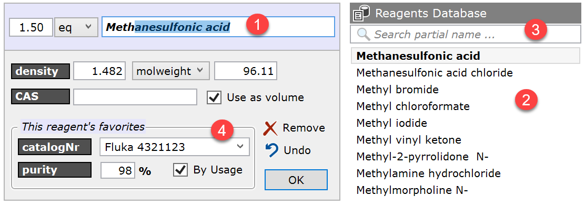
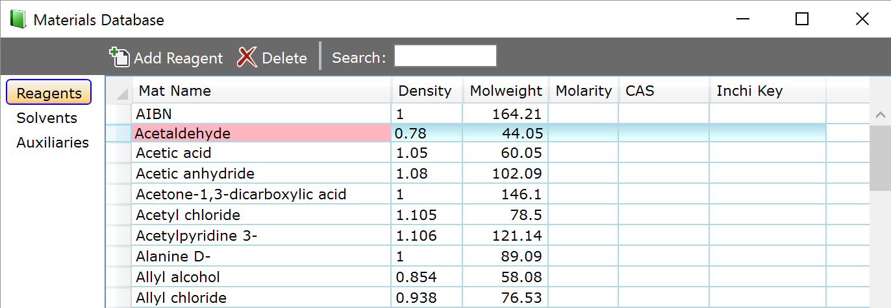

Materials Database
Espresso ELN contains a built-in, self-learning materials database. Whenever you add a so far unknown material to an experiment, it is automatically added to the materials database, which stores all required materials constants (molecular weight, molarity, density, etc.). Variations of each material (supplier catalog-Nr, purity, etc.) are stored in a separate child database.
The materials database comes into action whenever you start typing a material name inside the name text box (1) of a material panel. While typing, the matches of the main database starting with the typed in characters are updated in the list to the right (2). Another option to find a specific material is to utilize the partial name search (3), which returns the materials containing the specified search text somewhere in their name.

For enhanced accuracy, material tracing and reproducibility, it is often required to specify the supplier catalog number and the purity of the utilized material. In such cases, the favorites area (4) will serve your needs. After the specification of a material, this is the place to enter its supplier catalog number and associated purity. These entries are remembered by the application - the next time you specify the same material, its most frequently used catalog number / purity pair will appear. If the "By Usage" checkbox is unchecked, the favorites appear in alphabetical order instead of by use frequency. Favorites can be removed by right-clicking their entry in the dropdown menu and selecting Remove ... from the context menu.
Also the main materials database entries can be edited. Since every material you ever used is automatically stored in your materials database, you might want to delete one or the other, or edit its values. To do this, go to the Dashboard section and click the Materials tool item:

A table containing your current materials database now opens, with categories for reagents, solvents and auxiliaries. The material table allow you edit, delete and add materials according to your needs.
